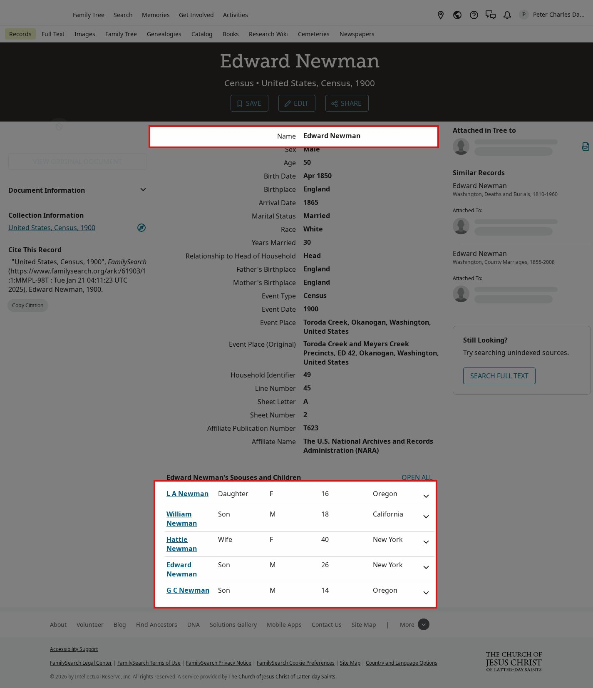

William Newman b. 1882
Peter's great-great-uncle by adoption.
Also recorded as W Newman (1900 census).
William Newman was born in Mar 1882 in California, United States1, the son of Edward Newman and Harriet M Brate3.
Family
- Parents
- Edward Newman 1844–1909 and Harriet M Brate 1847–1924 documented
Life events
| Event | Date | Place and details |
|---|---|---|
| Lived | bet 1882 and Aug 1892 | Gilliam County, Oregon, United States2 |
| Born | Mar 1882 | California, United States1 |
| Lived | 1900 | Washington, United States3 |
Records


Sources
- Household of Edward Newman, Toroda Creek, Okanogan, Washington, NARA T623, film 1241747, DGS 004118876, sheet 2A, household 49.
—, W | Son | W | M | Mar 1882 | 18 | S | | | | California | England | New York | | | | Farm laborer | 0 | | Yes | Yes | Yes
Born March 1882 in California to Edward Newman (born England) and Harriet M. Brate (born New York), according to the 1900 US census in Toroda Creek, Okanogan County, Washington.
- NUMIDENT and 1949 Washington death record of Grover Cleveland Newman, 1901 BC marriage of Lilly E. Newman, and 1892 elopement from Fossil, NUMIDENT:539101528; DigitalFilmNbr DI0001099.
"value" : "\"United States, Social Security Numerical Identification Files (NUMIDENT), 1936-2007\", <i>FamilySearch</i> (https://www.familysearch.org/ark:/61903/1:1:6KW1-MWLZ : Fri Jul 03 20:52:03 UTC 2026), Entry for Grover Cleveland Newman and Edward Newman." … "original" : "28 Apr 1887" … "original" : "Fossil Wheel*, Oregon, United States" … "fullText" : "Grover Cleveland Newman" … "fullText" : "Edward Newman" … "fullText" : "Hattie M Brate"
Inferred to have grown up with his parents Edward and Harriet Newman in Fossil, Gilliam County, Oregon, where his younger siblings Lilly E. Newman (born 1882 in Fossil per 1901 BC marriage JD8G-HXW; Jan 1884 in Oregon per 1900 census MMPL-98T) and Grover Cleveland Newman (born 28 April 1887 in Fossil per NUMIDENT 6KW1-MWL6; 28 April 1886 in Fossil per 1949 WA death record HV8L-SSN2) were born and from where his older sister Carrie May Newman eloped on 16 August 1892 (L51K-5YQ).
- Household of Edward Newman, Toroda Creek, Okanogan, Washington, NARA T623, film 1241747, DGS 004118876, sheet 2A, household 49.
169 | 172 | Newman, Edward | Head | W | M | July 1838 | 61 | M | 31 | | | England | England | England | 1865 | 35 | Na | Farmer | 0 | | Yes | Yes | Yes | O | F | F | 136 | —, H M | Wife | W | F | Feb 1848 | 52 | M | 31 | 5 | 5 | New York | New York | New York | | | | | | | Yes | Yes | Yes | —, E | Son | W | M | Sept 1875 | 24 | S | | | | New York | England | New York | | | | Farm laborer | 0 | | Yes | Yes | Yes | —, W | Son | W | M | Mar 1882 | 18 | S | | | | California | England | New York | | | | Farm laborer | 0 | | Yes | Yes | Yes | —, L E | Daughter | W | F | Jan 1884 | 16 | S | | | | Oregon | England | New York | | | | | | | Yes | Yes | Yes | —, G C | Son | W | M | Apr 1886 | 14 | S | | | | Oregon | England | New York | | | | At school | | 6 | Yes | Yes | Yes
1900 US census, Toroda Creek, Okanogan County, Washington (Sheet 2A, Household 49): William Newman, son, single, white, age 18y, born Mar 1882 in California (father born England, mother born New York), in the household of his parents Edward Newman (50y) and Hattie Newman (40y) with siblings Edward Newman (26y), L A Newman (16y), and G C Newman (14y).